Amazon Connect contact center
Overview
I followed a five phase lab to start up a working cloud contact center in AWS using Amazon Connect. That meant provisioning an instance, claiming a public phone number, designing an inbound contact flow with prompts and queue routing, tightening security profiles, then proving the whole path with a real phone call into the Contact Control Panel (CCP).
What I did
-
Phase 1: Launch the instance
Amazon Connect needs its own instance before anything else runs. In the console I opened Amazon Connect and started the create wizard. I picked a unique access URL alias, chose identity management that stores users inside Connect for this test, and stepped through add administrator, telephony (incoming and outgoing enabled), and data storage. AWS wired up S3 paths, CloudWatch log groups, and optional extras like customer profiles and email using service roles. On the review screen I confirmed storage and logging, then created the instance and waited for it to finish provisioning. The dashboard screenshot is the workspace after that came online.
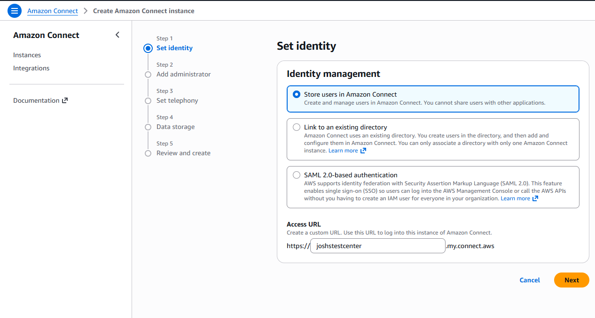
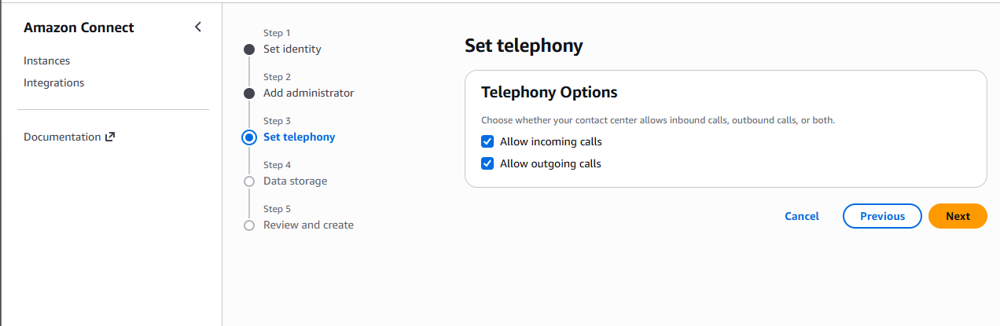
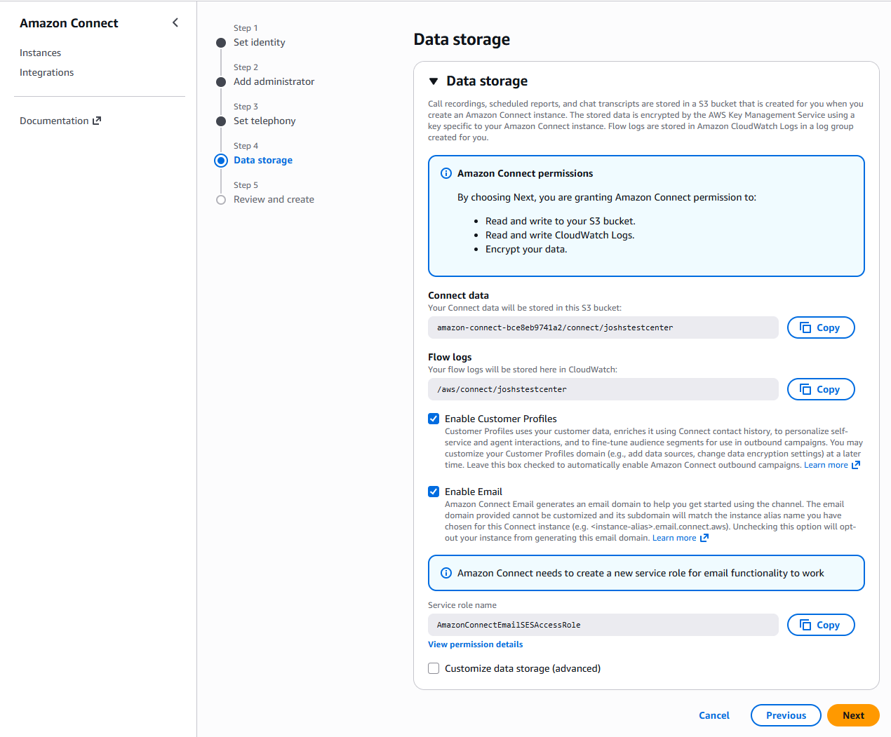
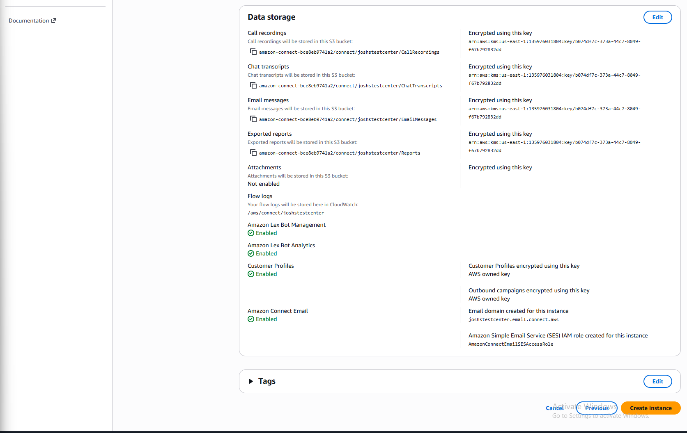
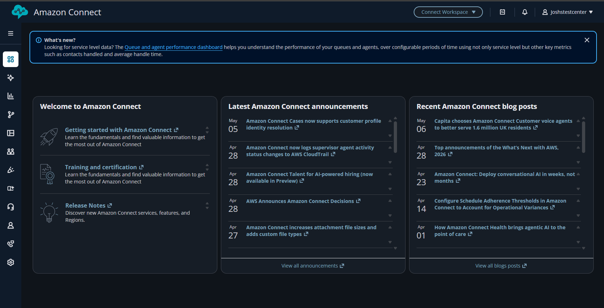
-
Phase 2: Claim a phone number
With the instance live I went to Routing, then Phone numbers, and claimed a toll free voice number for the United States. For a quick test I pointed inbound traffic at the sample inbound flow so I could dial in without building custom routing first.
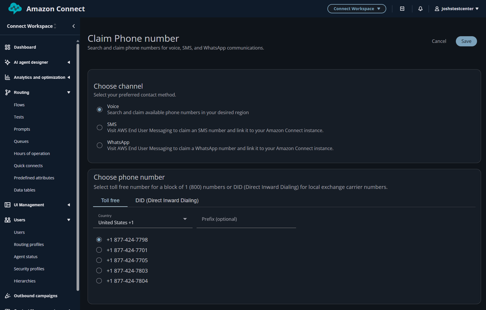
-
Phase 3: Build the contact flow
This is where caller experience gets defined. In Routing, Contact flows, I used the visual designer to chain blocks from entry through Set voice, Play prompt for the greeting, Store customer input for a menu digit, then Set working queue to BasicQueue when the caller matched the choice, with error paths ending the flow cleanly. I saved and published so production traffic could use it.
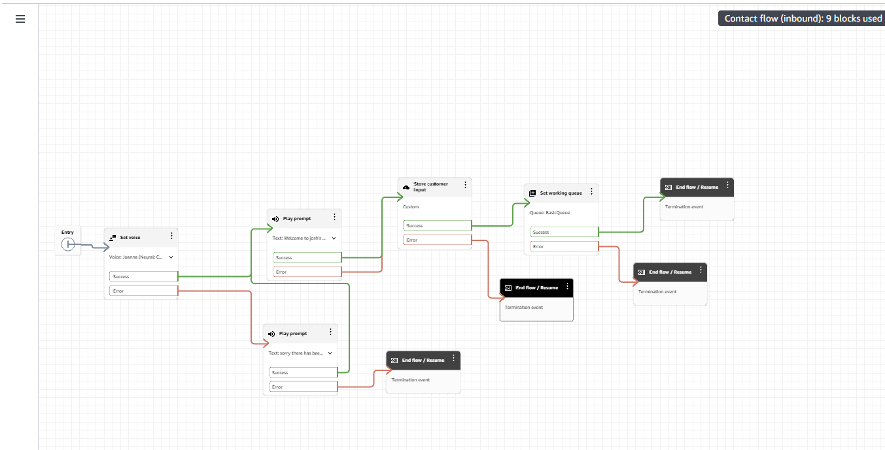
-
Phase 4: Lock down access
Connect separates day to day agent powers using security profiles. I edited permissions so recordings access lined up with least privilege (for example access to redacted call recordings without blanket delete rights). I also trimmed analytics and user administration so roles could only view contact search or view users instead of edit or remove everywhere that fit the scenario.
Outside Connect I kept my own AWS IAM posture in mind: manage Connect with scoped policies instead of parking everything on a broad admin user when that is an option.
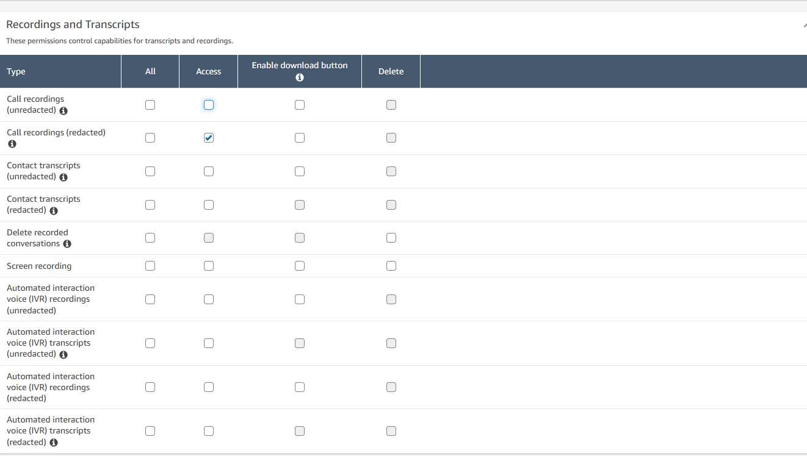
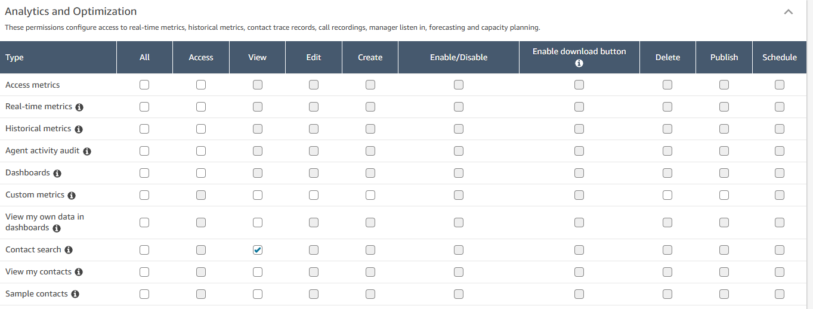
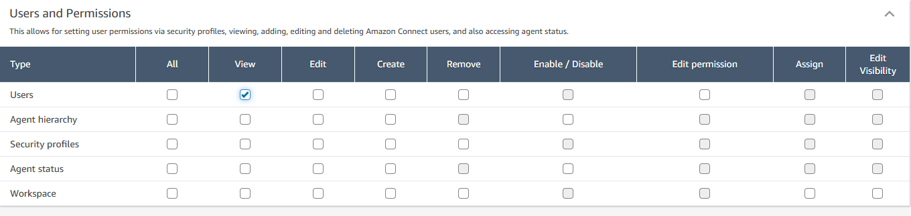
-
Phase 5: Live test
I opened the Contact Control Panel from the Connect UI, set status to Available, dialed the claimed toll free number from my phone, and confirmed the browser showed a connected inbound contact while audio matched the flow I published.
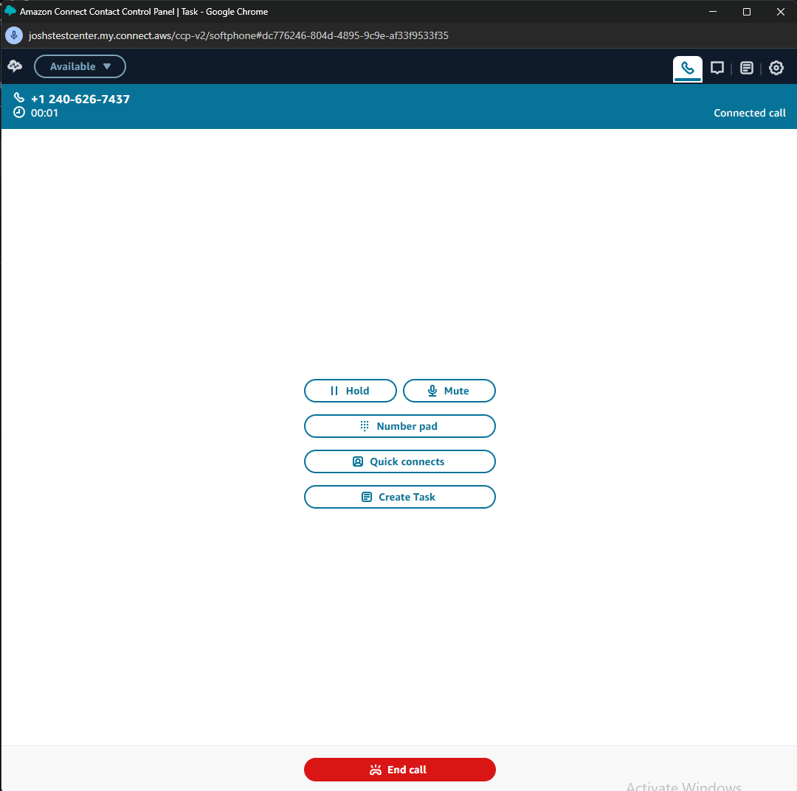
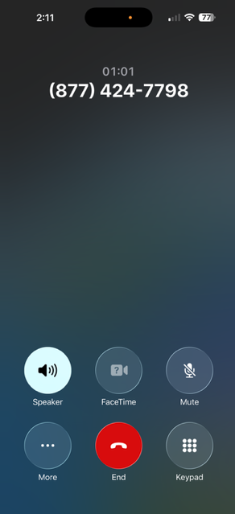